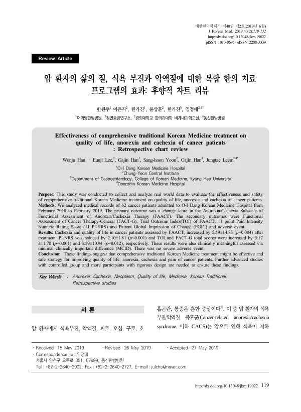

Effectiveness of comprehensive traditional Korean Medicine treatment on quality of life, anorexia and cachexia of cancer patients: Retrospective chart review
Han W, Lee E, Han G, Yoon Sh, Han G, Leem J
Journal of Korean Medicine 40(2):119-132

첫 장 · 오픈액세스First page · open access
논문 소개Summary
식욕부진과 악액질은 암 환자에게 흔합니다. 먹고 싶은 마음이 사라지고 체중과 근육이 함께 빠지는 이 증후군은 중요한 사망 원인이자 가장 강한 예후 인자의 하나이고, 2010년 국내 조사에서 유병률이 61퍼센트였습니다. 그런데 표준 치료가 없습니다. 프로게스테론이 가장 낫다고 여겨지지만 삶의 질을 올리지 못하고 혈전색전증과 고혈당 같은 위험이 따르며, 코르티코스테로이드는 체중에 영향을 주지 못해 짧게만 씁니다. 그 빈자리에 한의 의료기관을 찾는 환자가 많은데 그 결과를 잰 자료가 없었습니다.
이 후향적 차트리뷰는 2018년 2월부터 2019년 2월까지 어의당한방병원에 입원한 886명 가운데 입원 시 FAACT 설문을 마친 암 환자 79명을 추리고, 퇴원 시 평가까지 끝난 62명을 남겼습니다. 일차 평가변수는 삶의 질 척도에 식욕부진·악액질 12문항을 더한 FAACT 총점이고 FACT-G와 TOI, 11점 통증 척도를 함께 보았습니다. 통계적으로 유의하더라도 임상적으로 의미 있는 최소 변화량에 못 미치면 의미가 없다고 미리 정해 두었습니다.
침과 적외선치료는 62명 전원에게, 뜸과 부항은 각각 69.4퍼센트에게 시행되었고 한약은 12.9퍼센트에 그쳤습니다. 한약이 적은 것은 건강보험이 적용되지 않기 때문으로 보았습니다. 침은 사암침을 주로 썼습니다. 결과는 FAACT 총점이 5.59점, TOI가 5.17점, FACT-G가 3.59점 올랐고 통증은 2.10점 내렸습니다. 모두 통계적으로 유의했고 최소 변화량도 넘었습니다.
그러나 어디가 좋아졌는지를 갈라 보면 그림이 좁아집니다. FAACT의 다섯 하위 척도 가운데 신체 상태와 식욕부진·악액질 척도만 유의하게 변했고 사회·가족, 정서, 기능 척도는 변화가 없었습니다. 저자들은 사회와 정서와 기능까지 움직이려면 한의정신치료나 상담 같은 정서적 지지와 기능 회복을 위한 재활이 함께 필요하다고 적었습니다. 좋아지지 않은 쪽이 오히려 다음에 무엇을 더해야 하는지를 가리킨 셈입니다.
가장 큰 한계는 대조군이 없는 단일군 후향 연구라 자연경과에 따른 호전을 배제할 수 없다는 점입니다. 단일기관이고 환자 수가 적어 이상반응을 충분히 관찰하기 어려웠으며, 참여자 대부분이 ECOG 수행상태 0 또는 1인 경증이어서 중증 환자에게 그대로 옮길 수 없습니다. 중대한 이상반응은 없었습니다. 저자들은 대조군 연구와 다기관 전향 레지스트리, 질적연구를 다음 과제로 꼽았습니다.
Anorexia and cachexia are common in cancer. This syndrome — losing the desire to eat while weight and muscle fall away — is a major cause of death in cancer patients and one of the strongest independent prognostic factors; a 2010 Korean survey found a prevalence of 61 percent. Yet there is no standard treatment. Progesterone is considered the best available option but does not improve quality of life and carries risks of thromboembolism, oedema and hyperglycaemia, while corticosteroids do not affect weight and are used only briefly. Many patients turn to Korean medicine institutions to fill that gap, but no data existed on what came of it.
This retrospective chart review covered 886 patients admitted to O-I Dang Korean Medicine Hospital between February 2018 and February 2019; of these, 79 were cancer patients with a completed FAACT questionnaire at admission, and 62 had a discharge assessment allowing analysis. The primary outcome was the total FAACT score — a general cancer quality-of-life instrument plus a 12-item anorexia/cachexia subscale — with FACT-G, the Trial Outcome Index, an 11-point pain rating and the Patient Global Impression of Change as secondary outcomes. It was decided in advance that a statistically significant change failing to reach the minimal important difference would count as clinically meaningless.
Acupuncture and infrared therapy were given to all 62 patients, moxibustion and cupping to 69.4 percent each, and herbal medicine to only 12.9 percent — the low herbal figure attributed to its exclusion from national health insurance coverage. Acupuncture was mostly Saam style, led by the spleen tonifying formula at 38.7 percent. Total FAACT rose by 5.59 points, the Trial Outcome Index by 5.17, and FACT-G by 3.59, while pain fell by 2.10. All were statistically significant and all exceeded the minimal important difference.
Broken down by domain, however, the picture narrows. Of the five FAACT subscales, only physical wellbeing and the anorexia/cachexia subscale changed significantly; social/family, emotional and functional wellbeing did not move. The authors attribute this to the treatments provided being acupuncture, moxibustion, cupping and herbal medicine, and argue that moving the social, emotional and functional domains would require adding Korean medicine psychotherapy, counselling or meditation as emotional support, alongside rehabilitation for functional recovery. What failed to improve is what points to the next thing to add.
The principal limitation is the single-arm retrospective design without a control group, which cannot exclude improvement from natural course. The single centre and small sample made it hard to observe adverse events adequately, and most participants had ECOG performance status 0 or 1, so the findings do not transfer directly to more severely ill patients. No serious adverse events occurred. The authors name a controlled study, a multicentre prospective registry, and qualitative research capturing patients' own accounts as the next steps.
인용Cite
Han W, Lee E, Han G, Yoon Sh, Han G, Leem J. Effectiveness of comprehensive traditional Korean Medicine treatment on quality of life, anorexia and cachexia of cancer patients: Retrospective chart review. Journal of Korean Medicine. 2019;40(2):119-132. doi:10.13048/jkm.19022